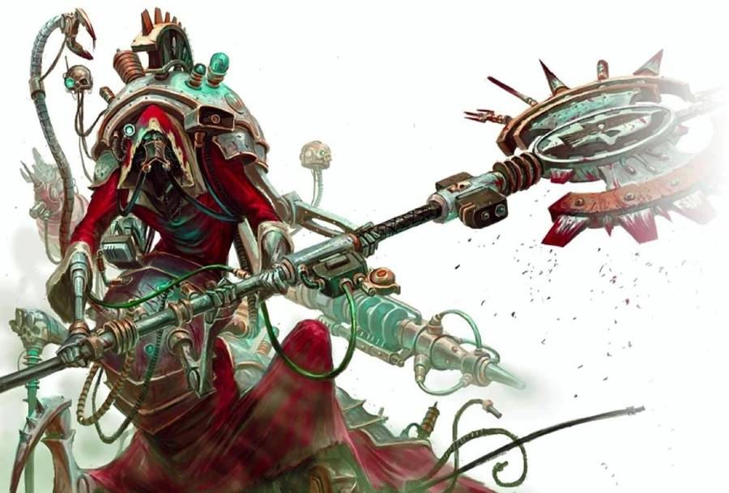

Archmagos
| Archmagos | |
|---|---|
The Icon Mechanicus, borne by every tech-priest Artwork © Games Workshop | |
Belisarius Cawl, Archmagos Dominus Artwork © Games Workshop | |
| Notable holder Belisarius Cawl Archmagos Dominus; active in the Era Indomitus | |
| Adeptus Mechanicus Magos Fabricator-General Synod of Mars | |
| Style | Archmagos; Archmagos Dominus |
| Type | Senior rank of the tech-priesthood of the Adeptus Mechanicus |
| Member of | The Synod of Mars (the most senior archmagi) |
| Reports to | The Fabricator-General of Mars |
| Appointer | Recognition by the Adeptus Mechanicus of mastery of a field of knowledge |
| Term length | For life |
| Formation | Before the Treaty of Olympus (739.M30) |
| Deputy | Magi, Enginseers and lesser tech-priests |
| Forms | Archmagos Dominus; Archmagos Veneratus; Archmagos Explorator; archmagi of the orders of the High Tech-Arcana |
An archmagos (plural archmagi) is a senior tech-priest of the Adeptus Mechanicus: a magos whom his peers regard as having completely mastered his field of knowledge. The Mechanicus ranks below the Fabricator-General of Mars and his deputy, the Fabricator Locum, and the archmagi stand among the highest of them. Archmagi rule forge worlds, command the armies and fleets of the Mechanicus and head its great orders of learning, and many of them, after centuries of augmentation, are more machine than human.[1][2]
The title has several forms, each tied to a duty. An Archmagos Dominus is a tech-priest of the order of war, the master of the ancient military secrets of the Mechanicus, above all the battle-automata, and the commander of its forces in the field. An Archmagos Explorator leads an Explorator fleet in the search for lost knowledge. An Archmagos Veneratus is a rank within the Orders of the High Tech-Arcana whose exact standing the open records do not give. The best known archmagos of the present age is Belisarius Cawl, Archmagos Dominus of Mars, the creator of the Primaris Space Marines.[1][3]
The archmagi hold their power in a priesthood that has lost the habit of innovation. The Cult Mechanicus preserves the technology of the Imperium by rite, dogma and edict rather than by understanding, and an archmagos is expected to guard the sacred lore of the Omnissiah, not to depart from it. The exceptions are remarkable and few. Cawl, who has served Mars for ten thousand years, is one, and he is known in the Mechanicus for working in secret, against the grain of its doctrine, and for what he has produced.[1][3]
The rank and its forms
[edit]Magi and archmagi
[edit]A magos is a tech-priest who has been recognised as a master of a technical or scientific discipline after many years of service to the Omnissiah. The Adeptus Mechanicus is divided into many specialist divisions, the divisiones of High Gothic, and a magos takes a title that names his division: magos biologis, magos logis, magos xenologis, magos cybernetica and many more. The variations of the title in each division include archmagos and archmagos veneratus, which presumably mark greater seniority, status and experience, though the Mechanicus has never published their exact meaning to the other Adepta. Overseer-Imperator is another high rank whose place in the hierarchy is not known.[1][4]
The offices and titles of the magi are shifting and complex. The records name seven grades of seniority among them, from highest to lowest: the Prime Hermeticon, the Lord Dogma, the Veneratus, the Mechae Moribundus, the Invictus Acquisitor, the Gerontocrat and the Data-Predator. An archmagos is a magos that his peers regard as having completely mastered his field, and the title says more about the standing of the person than about a fixed grade. A senior tech-priest who is skilled in another field will often take the title Tech-Priest Dominus in time of war, to devote his efforts to military matters.[1][4]
Archmagos Dominus
[edit]A magos dominus (feminine, magos domina) is a senior tech-priest who commands the Mechanicus in war and holds much of what survives of the military knowledge of the Age of Technology, especially the ancient art of the combat robots called the battle-automata. In the Horus Heresy the magi dominus were masters of the Legio Cybernetica, the sect of the priesthood of Mars that was given the dread right to create and control the robotic cortex-automata built for war. The secrets were dangerous enough that, by tradition, those who held them gave up an easy road to political power in the ancient Mechanicum.[1][4]
In the millennia since the Heresy a magos dominus has also led the electro-priests and Kataphron battle servitors of the Battle Congregations, and the Archmagos Dominus gathers Skitarii legions and maniples of the Legio Cybernetica when he takes the field. The art that he studies has made many in the Mechanicus consider him dangerous, which limits his chances of rising in the politics of the Priesthood of Mars even in the late 41st millennium. Other forge worlds will often place their troops under the command of an archmagos dominus of repute, asking only that he share what he learns.[4][3]

Archmagos Explorator
[edit]The senior tech-priests who serve as magi explorator are obsessed with the Quest for Knowledge. They search the galaxy for lost Standard Template Construct databases and for the scientific lore that Mankind lost in the Age of Strife, and they will walk into forgotten catacombs at the risk of death for scraps of knowledge from the Age of Technology. Many command the Explorator fleets that push the frontiers of the Imperium outward, or serve beside the rogue traders. A related office, the magos errant, studies several disciplines and is attached to rogue trader fleets and other expeditions by treaty between the Mechanicus and the sponsor.[1][4]
Archmagi of the orders
[edit]The specialisations of the magi and archmagi are known as the Orders of the High Tech-Arcana, and almost every forge world has representatives of the orders, who wield much power within the Mechanicus. Hundreds exist. Seven dominated the politics of the ancient Mechanicum at the time of the Great Crusade and the Heresy: the Archimandrite, the Lacrymaerta, the Myrmidax, the Malagra, the Reductor, the Cybernetica and the Macrotek. Later orders include the Adnector Conciliar, whose magi maintain the mechanisms of the Golden Throne, the Magos Autokratoris, who oversee the Titans of the Collegia Titanica, and the Magos Biologis or Genetor, who test the gene-seed tithe of every Chapter of the Adeptus Astartes for signs of mutation.[1][4]
History
[edit]Mars before the Imperium
[edit]The rank of archmagos is older than the Imperium. The Mechanicum of Mars was ruled before the Great Crusade by its Fabricator-General and a body of senior magi, and it was with that leadership that the Emperor of Mankind made the Treaty of Olympus in 739.M30, by which Mars kept its own priesthood and its own faith. During the Great Crusade the Mechanicum sent its Taghmata, its Explorator fleets and its Titan Legions to the war beside the expeditions of the Imperium, and archmagi were among its commanders.[1][4]
The Horus Heresy
[edit]In the Horus Heresy (005–014.M31) the senior magi of Mars divided. The Fabricator-General Kelbor-Hal and many of his archmagi joined the Warmaster Horus and became the Dark Mechanicum, and in 005–006.M31 the Schism of Mars set tech-priest against tech-priest. The Fabricator Locum, Zagreus Kane, led the loyalists and, late in the Heresy, in 012.M31, the Mechanicum was divided so that the traitors and hereteks of the Dark Mechanicum could be purged from it. The loyal organisation took the name Adeptus Mechanicus and Kane became its first Fabricator-General. The Council of Terra approved the change, after objections from magi who feared that it fixed Martian rule over the other forge worlds.[5][1]
The long age of the Imperium
[edit]Since the Heresy the archmagi have kept the Mechanicus in every age of the Imperium. In the Era Indomitus the Archmagos Dominus Belisarius Cawl, who has been alive since the Heresy, finished a work of ten thousand years when he completed the Primaris Space Marines and began the Ultima Founding in about 999.M41, from candidates held in stasis beneath Mars since the Heresy. He was present in the fall of Cadia and, afterwards, in the Indomitus Crusade, where his help proved decisive in stabilising the Imperium Sanctus. Mechanicus forces on the Cadian Gate have also been led by an Archmagos Terminus, with heavy Skitarii.[3][4][6]
Powers and limits
[edit]Rule and command
[edit]An archmagos may rule a forge world, though the Fabricator-General of Mars claims authority over all of them. The rulers of forge worlds other than Mars are also called fabricator-generals in addition to their local title, but only the Fabricator-General of Mars sits among the High Lords of Terra and speaks for the whole Adeptus Mechanicus. The Fabricator Locum is the second highest ranking tech-priest of Mars and of other forge worlds and assists the Fabricator-General in its government. An archmagos below these offices commands the forces, the research and the production that his order or his fleet is charged with.[1][2]
Doctrine and discipline
[edit]Archmagi are bound by the doctrine of the Omnissiah and by the Mechanicus's horror of innovation. The Magi Juris, who guard the Cult Mechanicus against tech-heresy, are thought by many inside and outside the Adeptus to act for a secretive circle called the Lords Dragon. Those who go too far are condemned as hereteks, and archmagi of the Dark Mechanicum are among the traitors named in Imperial history. Even Cawl, who is orthodox in holding that the Emperor is the Omnissiah, has disagreed with a great deal of Mechanicus dogma.[1][4][3]
Notable archmagi
[edit]Belisarius Cawl, the Archmagos Dominus, was vat-born on Mars in the early 31st millennium, served as a tech-acolyte in the Heresy, and has lived for ten thousand years by methods that no one in the Mechanicus can explain. He holds the titles of Forge Lord, Lexico Arcanus and Prime Conduit of the Omnissiah, the last given to rare minds that have mastered many fields, and he is the creator of the Primaris Space Marines.[3][4] Zagreus Kane, the Fabricator Locum of Mars, rose from the rank of a senior tech-priest to lead the loyalists of Mars and to become the first Fabricator-General of the reformed Adeptus Mechanicus in 012.M31.[5] Kelbor-Hal, the Fabricator-General, was the first lord of the Dark Mechanicum and the chief traitor among the senior magi of Mars.[5]
Timeline
[edit]| Date | Event |
|---|---|
| Before 739.M30 | The Mechanicum of Mars is governed by a Fabricator-General and senior magi |
| 739.M30 | The Treaty of Olympus joins Mars to the Imperium |
| Early M31 | Belisarius Cawl is vat-born on Mars (estimated) |
| 005–006.M31 | The Schism of Mars divides the archmagi and magi of the Mechanicum |
| 012.M31 | The loyalists form the Adeptus Mechanicus; Zagreus Kane is the first Fabricator-General |
| M31–M41 | Cawl works in secret on the Primaris programme, losing and reloading his memories about every five centuries |
| c. 999.M41 | The Ultima Founding: Cawl's Primaris Space Marines are revealed |
| 999.M41 | Cawl and Mechanicus forces take part in the defence of Cadia and the Cadian Gate |
| Early M42 | Cawl serves the Indomitus Crusade |
See also
[edit]Notes
[edit]References
[edit]- ^ a b c d e f g h i j k l "Tech-priest". Warhammer 40k Wiki (Fandom). Clark, Andy. Steel Tread (novel). Black Library. ch. 3. Abnett, Dan. Titanicus (novel). Black Library. ch. 10.
- ^ a b Haley, Guy. Avenging Son (novel). Black Library. ch. 26. Haley, Guy. Baneblade (novel). Black Library. Prologue, ch. 7.
- ^ a b c d e f Haley, Guy. Dark Imperium (novel). Black Library. ch. 12. Haley, Guy. Belisarius Cawl: The Great Work (novel). Black Library. chs. 2-3, 5-8. Haley, Guy. Darkness in the Blood (novel). Black Library. ch. 11.
- ^ a b c d e f g h i j Codex: Adeptus Mechanicus (8th edition). Games Workshop. pp. 10, 40-41, 44-45, 74-75, 80. McNeill, Graham. Mechanicum (novel). Black Library.
- ^ a b c Counter, Ben. Hellforged (novel). Black Library. ch. 1. Green, Jonathan. Iron Hands (novel). Black Library. pg. 122.
- ^ "Defend the Cadian Gate with the Archmagos Terminus and new Skitarii heavies". Warhammer Community.